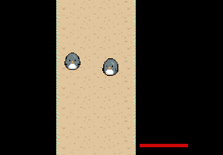
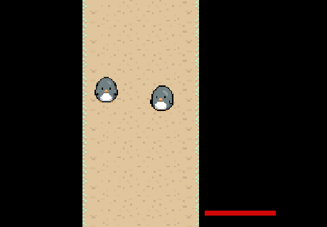

Ice Trial
Image Gallery
 


Game Description
To obtain the legendary Ice Orb, you must conquer the Ice Trial,
located in the Ice Shrine!
As a Pengu, defeat the guardians that protect the sacred orb!
Controls: WASD to Move, Spacebar to Slide, Mouse to aim, Left-Click to Interact/Attack, Scroll to Swap Weapons.
About
A game made for itch.io's My First Game Jam Winter 2020 with teammate Branchi.
While this is certainly not our first game jam, we entered the
contest anyway to motivate ourselves to work on a new project.
The jam's theme was "Winter", so we decided on using a Penguin
as the main character.
Game made in Unity.
Stats
Status: Hiatus
Date Started: February 2, 2020
Date Completed (Demo): February 9, 2019